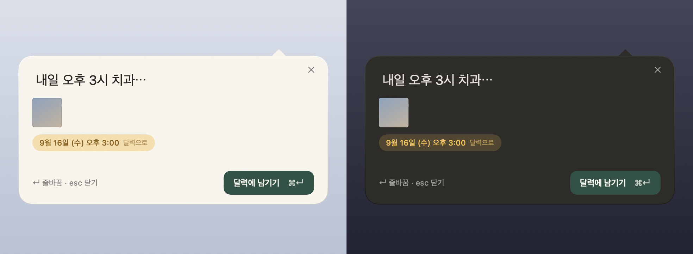
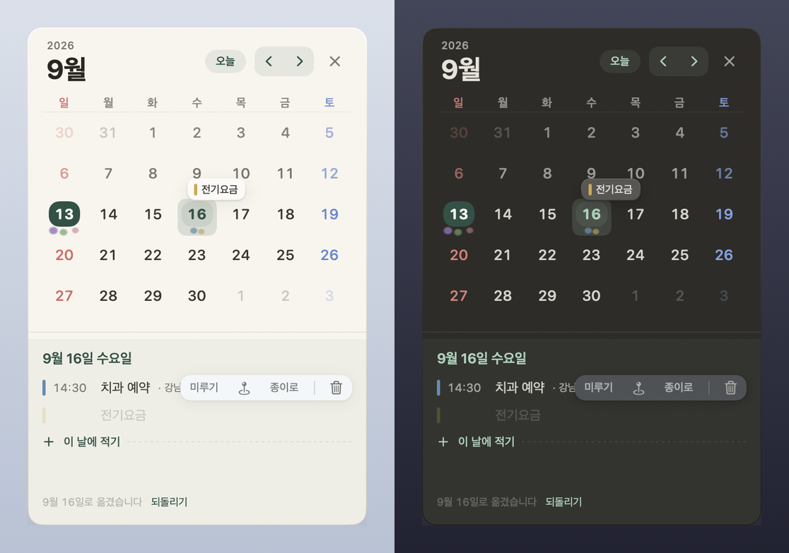
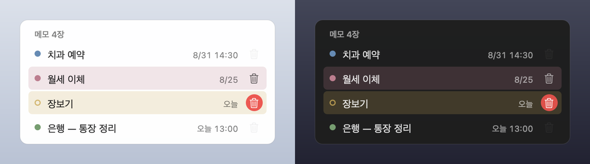

Why it looks this way
-
It never asks you to finish
Half-written, untitled, undated — those are the normal states here. There are no empty fields waiting to be filled, no reminders to fill them, and no Save button to forget.
-
Time is the only structure
lazymemo keeps no folders and no tags, so the calendar is something you handle — pick an entry up, drop it on another day, or push it back with a single click. Write
dentist tomorrow at 3and the date is read for you. -
Old things step aside on their own
A checklist you have finished and a date that has passed quietly leave the desktop. Nothing is deleted — the menu keeps the count, and one click brings them all back.
-
The app keeps out of your way
A note at rest is paper and letters, nothing else: no title bar, no toolbar, no coloured dots. The controls fade in over the content when your pointer arrives, and fade out again when it leaves.
Screens



How you use it
| ⌥⌘N | Quick capture, in a bubble below the menu bar icon. Typing also filters the notes you already have. The shortcut is yours to change in Menu → Settings. |
| ⌥⌘V | Paste straight to the desktop. Whatever you copied — text or a picture — becomes a new sheet without opening a window. |
| ⌘⌫ | Delete the note you have selected in the list. The box stays open and an Undo appears on the line just below. |
| esc | Close. The box remembers what you were typing — reopen it and your words are still there, selected, so typing simply replaces them. |
| The × on a note | Hides it. It does not delete it. The note comes back from the menu whenever you want it. |
| The red trash icon | Deletes — and the paper stays exactly where it was for eight seconds, holding an Undo. After that you still have thirty days. |
| The calendar icon | Puts an undated note on the calendar; if it already has a date, it shows you where that date lives. |
| A calendar row | Push it back a day, take the date off and send it back to the desktop, or delete it. All three leave an Undo behind. |
Finished things retire by themselves. A list with every box ticked steps back three days after you last touched it, and a past appointment steps back at the end of the following day. Neither is deleted — both stay in the files, in search and on the calendar, and the menu notes how many are put away. Notes you have pinned are never touched by this.
Your notes are files
If you ever remove lazymemo, your notes stay. The source of truth is a folder of Markdown files on your own Mac — open them in Finder, edit them in any text editor you like.
~/Documents/lazymemo/ notes/2026/08/01K3ZQ….md ← the original .trash/ ← deleted notes, kept 30 days
Move that folder inside iCloud Drive and you have sync. There is no backend to sign up for and nothing to configure — when you move the folder, the app follows it (Menu → Settings).
Claude, if you would like it
lazymemo builds a small MCP server alongside the app. Register it and you can ask Claude Desktop things like “book the dentist for two o'clock next Tuesday” or “what is on this month?”
No API key is needed. Claude calls lazymemo rather than the other way around, so the token cost sits with your own Claude subscription. The integration is entirely optional and off until you register it yourself.
Because Claude is able to delete notes, we did not build a tool that
deletes permanently. This is wiring rather than policy — no hard-delete
function exists anywhere in the code the MCP server can reach. Deletion moves a
note to .trash/, and restoring it is a single call.
Privacy
The only route by which the text of your notes can leave your Mac is the MCP integration above, and it opens only when you register it yourself.
One other thing uses the network — unfolding a link into a card. To do that, lazymemo asks the address you pasted for its title and picture. Only the address goes out, never the note; even so, that site does learn you pasted it. You can switch this off in Settings, and with it off the app contacts nothing at all.
This page keeps the same promise. It makes no outbound request of any kind — no trackers, no web fonts, no analytics — and the deploy workflow checks that before publishing.
A note on language
The app's interface is currently in Korean only, and the screenshots above show it exactly as it ships today. If that is a problem for you, we are sorry — please treat this page as a description rather than a promise, and you are very welcome to open an issue to say so. This page is also available in 한국어.